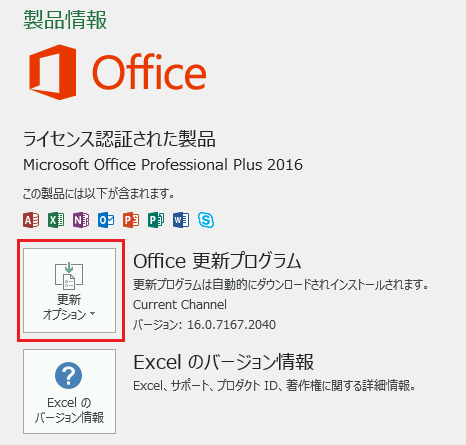
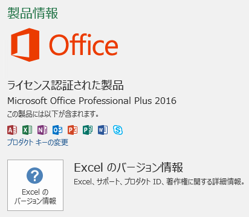
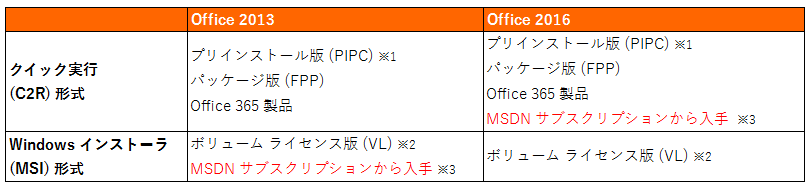

(※ 2016 年 9 月 8 日に Japan Office Support Blog に公開した情報のアーカイブです。)
こんにちは、Office サポート チームです。
本記事では クイック実行形式 (C2R) と Windows インストーラー形式 (MSI) を見分ける方法についてご案内いたします。
[はじめに]
Office 2013 以降の製品では、Office 2010 までのバージョンと同じインストール方式で動作する Windows インストーラー形式 (MSI) と呼ばれる製品とクイック実行形式 (C2R) とよばれる新しいインストール方式で動作する製品があります。
インストール方式に応じて Office 更新の方式も最適なものが用意されており、正しい Office 更新方法をお選びいただくうえでも、まずはインストール方式の識別方法についてご紹介いたします。
(C2R および MSI 形式の Office の更新方法については本サイトの下部にてご案内しております。)
Windows インストーラー形式 (MSI) のファイルは Windows インストーラを利用しているため、従来通り Microsoft Update による更新やサポート技術情報 (KB) の更新プログラムの適用が可能です。
クイック実行についての詳細は、以下の公開情報をご参照ください。
クイック実行の概要
https://technet.microsoft.com/ja-jp/library/jj219427.aspx
Office の更新プログラムをインストールする
https://support.office.com/ja-jp/article/2ab296f3-7f03-43a2-8e50-46de917611c5
[判別方法]
Office アプリケーションから [ファイル] タブ ? [アカウント] をクリックした際に表示される以下の画面の [更新オプション] の有無で判別が可能です。
判別方法概要
クイック実行形式 (C2R) : [更新オプション] ボタンがあります
Windows インストーラー形式 (MSI) : [更新オプション] ボタンがありません
確認手順
i. Excel を起動し、Excel ファイルを開きます。
ii. [ファイル] タブをクリックします。
iii. [アカウント] をクリックします。
iv. 右側に表示される [製品情報] 以下の情報を確認して、下記のいずれであるかをご確認ください。
<クイック実行形式 (C2R) のアカウント画面>
[Office 更新プログラム] と [Excel のバージョン情報] が上下に並んで表示されている場合は、 クイック実行によってインストールされた Officeとなります。

<Windows インストーラー形式 (MSI) のアカウント画面>
[Excel のバージョン情報] のみが表示されている場合は、従来の Windows インストーラー (MSI) を 使ってインストールされた Officeとなります。

[更新方法]
クイック実行形式の Office は Office 製品独自の更新方法となります。
上述の <クイック実行形式 のアカウント画面> 内の「更新オプション」ボタンから “今すぐ更新” をクリックしていただくことで、現在ご利用の Office バージョンのチャネルの最新版の更新プログラムをダウンロードし、インストールします。
Windows インストーラー形式 (MSI) の Office では、Office 2010 までと同様に Microsoft Update を使用して更新プログラムを適用します。
Microsoft Update の利用手順について詳しくは、下記のサイトを参照してください。
Windows Update 利用の手順
https://www.microsoft.com/ja-jp/safety/pc-security/j_musteps.aspx
Windows Update と Microsoft Update ってどう違うの?
https://support.microsoft.com/ja-jp/kb/914303
[補足情報]
各 Office 製品では以下のようになっています。

※1
プリインストール版 (PIPC) とは、コンピュータをご購入いただいた際に (Office 製品を、パッケージ単体で購入して、
パーソナル コンピュータにインストールするのではなく) 、既にパーソナル コンピュータにインストールされている形で販売されている Office 製品のことをいいます。
※2
ボリューム ライセンスにつきましては、以下の公開情報をご参照ください。
ボリューム ライセンスの概要
https://www.microsoft.com/ja-jp/licensing/licensing-programs/licensing-programs.aspx
※3
MSDN サブスクリプション製品 につきましては、Office 2013 と Office 2016 でインストール形式が異なりますのでご注意ください。
また、MSDN サブスクリプション製品につきましては、以下の公開情報をご参照ください。
サブスクライバー ダウンロードへようこそ
https://msdn.microsoft.com/ja-jp/subscriptions/downloads/